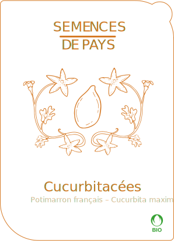
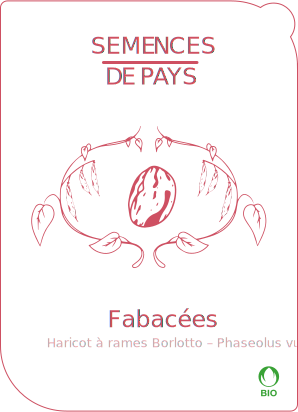
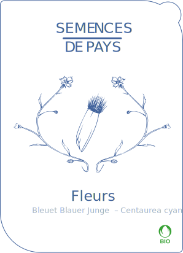
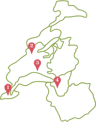

Nos semences
Nous vendons des sachets de graines, ceux-ci sont produits entièrement en Suisse et sont 100% biodégradable. Toutes nos graines sont issues de la biodiversité
Cucurbitacées
Potimarron orange en forme de toupie au caractéristique goût de châtaigne. Le plus ancien potimarron débarqué sur le continent.

Acheter
Fabacées
Cette variété traditionnelle italienne de haricots à écosser aux gousses zébrées de rouge donne une belle récolte de graines de plusieurs couleurs.

Acheter
Fleurs
Cette variété traditionnelle italienne de haricots à écosser aux gousses zébrées de rouge donne une belle récolte de graines de plusieurs couleurs

Acheter
Points de ventes
